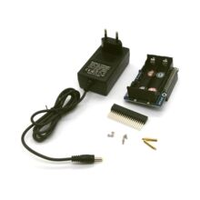

Waveshare ИБП (UPS) HAT для Raspberry Pi
ПитаниеЭто UPS HAT от Waveshare — плата бесперебойного питания для Raspberry Pi с подключением аккумуляторов и контролем параметров по I2C. Она предназначена для питания Raspberry Pi при пропадании внешнего питания и безопасного завершения работы.
Плата ставится на 40-pin GPIO Raspberry Pi и обеспечивает резервное питание от двух литий-ионных аккумуляторов 18650. Через I2C модуль умеет измерять напряжение, ток, мощность и оставшуюся ёмкость батареи, что удобно для мониторинга и автоматического shutdown. На борту есть схема защиты от перезаряда, переразряда, перегрузки по току, короткого замыкания и переполюсовки. Также предусмотрен USB-выход 5 В для питания других устройств. Типовое применение — автономные Raspberry Pi-проекты, где важно не терять питание при отключении адаптера.